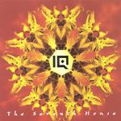

Home Artist links Label link

IQ - The Seventh House
| Artist: | IQ |
| Title: | The Seventh House |
| Label: | Giant Electric Pea GEPCD 1028 |
| Length(s): | 56 minutes |
| Year(s) of release: | 2001 |
| Month of review: | [03/2001] |
Line up
Peter Nicholls - lead and backing vocals
Martin Orford - keyboards, flute, backing vocals
Mike Holmes - guitars, guitar synth, keyboards
John Jowitt - bass, backing vocals
Paul Cook - drums and percussion
with
Tony Wright - saxophone
Tracks
| 2) | Erosion | 5.43
|
| 4) | Zero Hour | 6.57
|
| 6) | Guiding Light | 9.58
|
Summary
After an album such as Subterranea it is hard coming back. Genesis never really did
(with Gabriel) after the Lamb. Nicholls stayed however, and although it took a while
they finally did return. With how much of a vengeance then?
The music
Keyboards open The Wrong Side Of Weird, melodic and dream like. Then the music is
transformed into pumping progressive rock with a weirdly grumbling bass. A memorable
vocal melody can be enjoyed here, against the plodding backdrop of Cook's drumming.
The keyboard melody is repeated at times and gives the music an optimistic feel.
This is to be contrasted with the oftentimes dissonant guitars. Plenty of variation
in the vocal melody on this track and at some point Orford throws in some ahhhs as well.
The style of the song harks back to Ever, but my problem with Ever is that some parts
are simply boring to me. This is not the case on this track. Everytime I hear IQ these
days I think again of what Nicholls told me: we are a pop group, with prog arrangements.
After a piano interlude and some somber vocals, the music breaks out heavily again
with some very nice organ and the vocals of Nicholls becoming somewhat sarcastic.
Time for a bit of groove here, with the guitar looking for the one ear, the keys for
the other and the bass right in the middle. The music becomes more up-tempo now,
with shuffles by Cook and acoustic guitar tinkling in the back. A very good beginning
to this album.
Moody and somber is Erosion with the keyboards taking the lead on this track.
The electric guitar sounds like somebody hammering at the door. Then the music
moves into the same plodding pace as the previous track. Some flamenco sounds
in between the busy drumming of Cook, while Nicholls sings with his melancholy voice.
The music drops away a it, coming back to the opening music. The hammering guitar
still there.
Light acoustic guitar opens the long title track. This track to me is more in the
style of Subterranea with its strong imagery and quality chorus. The song slowly
gets underway with, but when it finally does the music is becomes rather Genesis like.
This is when the keyboards ring out loud. When the My Life Is Out Of Condition part
return, goosebumps. And it continues to stay good during the anthemic ending.
Zero Hour opens with percussive piano and percussion and guitar that hold a promise.
The bass and piano punctuate the vocal melody. The vocals are again rather somber
and after the bubbly intermezzo Holmes is allowed some space for a longstretched guitar
solo. He is in fact not that overly present on the guitars on this record.
Shooting Angels opens with New Agey sounds, but what follows could not contrast more.
Heavy industrial pounding, but the melodic piano keeps it all very acceptable.
Rather a plodding piece with the added saxophone of Tony Wright.
The final track almost reaches the ten minute mark. Guiding Light opens as a ballad.
The song quickly turns for the bombastic with the guitar and keyboards figthing their
duels and Cook going against the grain. Lyrically the song harkens back to the opening
track (Where Are You Now? Who Are You Now?) while Holmes plays some really sharp
guitar. The song ends with eyes cast down.
Nice artwork. I am not sure whether it is intentional, but the angels on the front
first seemed to me devils: focus on two arms and I see a devillish figure between them
bearing two wings.
Conclusion
For me it is so easy to be happy with an IQ album, I wonder if it helps anything that
I review it. Not that I like their music indiscrimminately. Ever was partly a let-down
for me (some songs lacked in the melody department), I expected better and some things
on the Menel albums were not great either (but there are some very good songs on there
as well as well as on Ever). Subterranea was grand; their first two albums are to me still
classics of the eighties and prog in general. Seems I am preaching for the parish in saying
that I really love this album. A mix of Ever and Subterrannea songwise, maybe a bit more of
the former, but much better melody wise. Again it is shown that IQ is a band which knows
how to write a song, derive a melody, with a singer who likes to write some mystifying
none-to-happy lyrics. The music is if you listen carefully rather poppy (with some hard
edged guitar mind you), but carefully crafted and progressively arranged and never showing
wears. The band does not try to explore new territory here, but manages to capivate the
whole 56 minutes.
© Jurriaan Hage